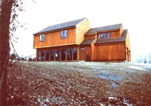
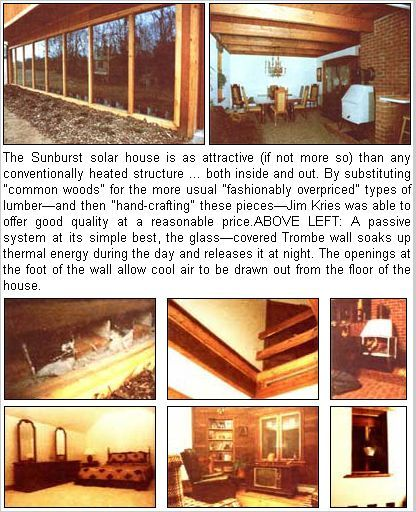
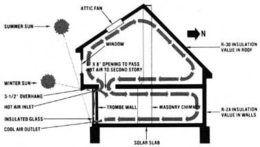

The ""Sunburst"" Solar Home
January/February 1979
This truly attractive house-designed around an honest-to-goodness Trombe wall--represents the "state of the art" in (ultra) low-technology solar heating.
Anyone who's familiar with solar-heated houses knows that there are any number of ways to harness the sun's energy ... from the simplest "passive" approach (the "little guy's" method) all the way up to the expensive, highly technical, "active" systems that big business tends to promote.
Recently, one of MOTHER's staffers and a photographer went to Landenberg, Pennsylvania to look at one of the "simple" systems and to talk to its designer -produce-salesman-turned-builder Jim Kries--who is in the process of constructing a small community of passively heated solar houses ... which he very appropriately calls "Sunburst" homes.
Mind you, though, these houses don't utilize what you might call your "average" solar collector. Instead, Jim has opted to incorporate a "Trombe wall" (named after its inventor, French physicist Felix Trombe), which not only heats the house without any moving parts or expensive equipment, but makes the dwelling as attractive (at least!) as any custom-built conventional home. In fact, the owners of the house-Vincent and Kathy Polidoro--decided to buy it when they saw the blueprints ... before construction of the home had even begun. And, after talking to the Polidoros, we're convinced that they haven't been disappointed at all!
It's no secret that solar-heated dwellings have come into their own in the past decade or so . . . thanks largely to the efforts of many "unconventional" -yet dedicated- designers. Folks like David Wright (see Plowboy Interview, MOTHER NO. 47), William Shurcliff, Steve Baer (Plowboy Interview, MOTHER NO. 22), Bruce Anderson (Plowboy Interview, MOTHER NO. 52), and a host of others saw a definite need to "make hay while the sun shines" rather than just sit around and complain about the rising costs of fossil fuels.
And there's no doubt that these solar homes really work ... despite what the skeptics say about cloudy days, winter storms, and other "no-sun" situations. But- with a few exceptions- most effective solar homes aren't as attractive as their designers-or the public-would like them to be. Let's face it, there's not too much you can do to improve the looks of a solar collector without lowering its efficiency ... until now, that is. Because the Jim Kries-designed "Sunburst" solar house is a real beauty!
You see, instead of trying to "hide" the collector in the back yard, Jim decided to use it as the entire south wall of the ground floor. To do this, he built a 14-inch-thick, 225-square-foot "Trombe wall" which is painted black on its outer surface (to absorb and hold the sun's heat) and is finished in white stucco on the inside (to assure an attractive, light, "airy" look in the house's dining and living room areas).
Of course, this "collector wall" isn't directly exposed to the weather. Instead, the entire surface is faced with another 225 feet (or so) of 5/8-inch-thick insulated glass, which is mounted-from floor to ceiling--about six inches in front of the actual collector. The double wall creates a passageway for the heated air to follow. And, as Kries is quick to point out, that insulated glass-although it is expensive-is no more so than common replacement panes for sliding doors ... because that's exactly what it is! In other words, instead of using fancy solar hardware where it's not needed, Jim "made do" with standard building materials ... to reduce costs and to insure that replacements would be available in the event of accidental damage.
So what we have, then, is a low-cost, simple way of collecting and storing heat ... which is great in the winter. But what about the summer? Well, Jim has that one figured out, too. You'll notice in the photographs that the south-facing upstairs wall (the one which is above the Trombe wall) is cantilevered three and a half feet beyond the glass "wall" below it. This overhang effectively protects that expanse of glass from the rays of the high summer sun ... and, if the sun can't get to the glass or the black wall behind it, no heat is produced. Also, most of the rays that do find their way to the collector surface just "bounce off", because of the oblique angle at which they strike the glass.
To insure that the house is completely free of unwanted hot air in the summer, Kries installed a large attic fan in the dwelling's second-story roof. Though he doesn't foresee a need for this addition, Jim explains that the fan serves as a positive "warm air exhaust route", which might be needed in the event of unusually hot or humid summer weather.
SUPPLEMENTAL HEAT... JUST IN CASE
The Trombe wall-despite its size and mass--still can only provide about 60 to 75% of the house's total winter heating needs (an impressive percentage, considering the low-cost simplicity of the system). Therefore, Jim added two auxiliary heat sources which-he hopes--won't ever see much use.
The main "backup system" is a 98,000 Btu/hr., thermostat-activated, oil-burning hot water furnace, which-because A's a two-zone design ("two-zone" means that the temperatures of two different areas can be controlled separately)only supplies heat where it's actually needed. Although the furnace is capable of providing all of the heat that would ever be necessary, Kries hopes that it will only be used on the coldest of days. The thermostats are set at 55*F, and thus far-says the builder-the furnace has not had to come on.
In addition to this "conventional" source of heat, Jim also makes use of an attractive Morso 1125 wood burning stove ... a unit that's not only favored for its high Btu output, but which also can be converted into a fairly efficient "open fireplace" by removing the doors. And, since the Sunburst house is located on two wooded acres, fuel supply should be no problem.
INSULATION MAKES THE DIFFERENCE
Jim was determined to make his design as energy efficient as possible, and that meant using insulation to its fullest potential. To accomplish this, Kries framed the entire structure with 2 X 6's on 24-inch centers (instead of the usual 2 X 4's) ... which give the house a rocksolid framework and allow a greater-than-usual amount of insulation to be used. Jim took advantage of this extra space, too. . . he installed six-inch fiberglass batting (over one-inch styrofoam sheeting) in the walls, and nine inches of batting in the ceiling.
In addition to insulating the walls and ceiling to the limits (they have R-values of 24 and 30 respectively), Kries also paid special attention to the foundation of the house (the 16-inch-thick "solar slab") by first laying down a full inch of tongue-and-groove styrofoam. This material was covered with six inches of gravel, which-in turn-was topped with six more inches of concrete. Finally the foundation was finished off with 3 inches of brick veneer, which serves as the floor of the living room. Not only does this "layering" prevent cold from seeping in through the foundation, but it also stores warmth within the mass of the floor. . . which works in concert with the Trombe wall to hold collected heat and release it slowly. (The Trombe wall is mounted directly on the insulated "solar slab" foundation of the house ... which also supports the masonry chimney in the center of the building. In this manner, both the heat collected through the Trombe wall and that absorbed by the chimney via the fireplace are held inside the entire structure for up to 16 hours).
But the high insulation factor isn't the only thing that keeps heat within the house ... Jim has made clever use of "airlock" double-door entryways (a fancy way of describing old-fashioned vestibules), and he also relies on several south-facing windows to admit heat (and light) into various rooms in the house ... including the living/dining area behind the otherwise solid Trombe wall.


HOW IT WORKS
The rays of the low winter sun strike the insulated glass collector wall face almost perpendicularly and pass through to the black-surfaced Trombe wall ... which collects and holds a good deal of the heat that's fed into it. In addition, whatever "extra" heat the Trombe wall can't contain is transferred by conduction to the "solar slab" below it. So, in effect, all the cement and masonry in the house act as a heat storage system.
Now, as the sun beats in through the south-facing glass wall (filling the Trombe wall with thermal energy), it also warms up the space between the glass and the collector surface, causing the air to rise and pour into the house through the hot air inlets (which are nothing more than a series of small vents built into the top of the collector wall. These inlets are equipped with one-way dampers that allow hot air to pass into the house, but don't let any of the precious warmth back out). Of course, because of the insulated glass most of the warmth accumulated in this air channel is retained and passed on to the rest of the structure,
As this heated air rises, it causes the cooler air from the floor of the house to be drawn out through the cool air outlets at the base of the collector wall (which are just 8" X 8" ducts formed into the concrete). In this manner, a complete heat flow cycle (through the room and back around the face of the collector) is maintained.
So, as the air circulates past this Trombe wall, it effectively heats the lower floor of the house. But what about the second story? Well, that's been taken care of, too, by the installation of a 4' X 8' opening between the two floors in the form of a balcony ... which is directly above one of the hot air inlets at the top of the Trombe wall. This balcony allows a good deal of warm air to circulate throughout the upper story of the house, and to return-by way of that opening-to mix with the heated air that is being forced (by convection) through the registers at the top of the Trombe wall. (This system of flow effectively prevents all the warm air from rising up through the balcony opening ... as some of it is naturally forced into the downstairs rooms by the returning cool air.) In addition to the heat provided by the collector, there are several south-facing insulated glass windows in the structure, which help provide light and heat during daylight hours (but allow very little heat to escape at night).
When the sun goes down, the heat that is stored in the collector wall (and in the solar slab below it) begins to radiate into the rooms, maintaining a comfortable temperature for as long as 16 hours. Even the wood-burning stove acts as part of this energy storage system . . . because both the masonry slab beneath the wood burner and its centrally located masonry chimney "grab"--by conduction-much of the warmth that would otherwise disappear up the stove's flue.
All of these systems go a long way toward providing the heat necessary for a comfortable winter ... but they would have guaranteed a very hot summer if Kries hadn't thought ahead. You see, Jim designed a 3-1/2-foot overhang above the Trombe wall, and this shelf effectively prevents the higher summer sun from shining onto the collector surface. And, most of the light that does manage to find its way to the glass wall actually bounces off . . . because the sun's rays strike the glass at an oblique angle. An attic "warm air exhaust" tan provides a final backup cooling system ... just in case a real heat wave happens along.
In addition to this well-planned heating and cooling system, Kries has insulated the house more than adequately (he also plans to earth-berm the north side of the structure ... in order to deflect cold northern winds up and over the roof). All in all, it'd be hard to imagine a more efficient passive solar home.
BUILDING AND MAINTENANCE COSTS
The Sunburst solar house (as well as all the subsequent Sunburst dwellings) uses no unorthodox methods of construction. Standard procedures and materials are utilized throughout, and even the Trombe wall can be constructed by any capable mason. On the other hand, the word "standard" can't really be applied to the home: "Above standard" is a much more applicable term. Yellow pine floors (covered with a polyurethane coating) are used where the masonry floors are not necessary for heat retention ... hand-routed Idaho white pine serves as molding and window framing ... and 8- by 12-inch solid elm lintels are mounted above the three downstairs south-facing windows.
Jim admits that the $70,000-plus price tag he puts on the Sunburst house might seem a bit steep to some people ... but he also points out that the price includes a two-acre piece of land, high-quality materials, and a good deal of hand workmanship. These factors, plus the savings gained by using the Trombe wall, make the home a good buy in the long run. And, of course, if the owners were to build the house themselves, considerable savings would be realized.
CREDIT WHERE IT'S DUE
Of course, Jim Kries didn't just stumble upon the idea for a Trombe wall by himself ... he selected the concept from a variety of others that were offered at a national conference on passive solar energy at the University of Pennsylvania last spring. In addition to the information that he picked up at that conference, Kries relied heavily on the experiences of Douglas Kelbaugh, who designed (and has been living in) a Trombe-walled solar house in Princeton, New Jersey since 1975 (see "At Last: A Beautiful Solar Home! ", MOTHER NO. 43, page 68). Jim also admits that he got a good deal of help and inspiration from Alex Wade, author of the book 30 Energy Efficient Houses You Can Build (Rodale Press).
THE GOOD AND THE BAD
There's little doubt that the Trombe wall concept is a good one ... and the idea works as well in "real life" as it's supposed to on paper. There are, however, several disadvantages that must be pointed out. Perhaps the most serious of these is that the collector wall can only retain its heat for about 16 hours ... less than the "average" passive system, and far less than a typical active system utilizing a liquid medium and tank or rock storage. Also, the Trombe wall would be difficult to add to an already built structure, and the nature of the wall is such that large open windows are impractical (since window area has to be "subtracted" from the collector surface).
Nonetheless, the many benefits of the Trombe wall easily outweigh its weaknesses. For instance, because the wall is completely passive, nothing short of a major disaster will harm it ... and there aren't any components to break down or otherwise fail. And, since the system uses standard construction and materials, it's relatively easy to build. Perhaps best of all, though, no outside sources of power are necessary to keep the Trombe wall in operation, and it lends itself to a variety of aesthetic modifications.
Needless to say, Jim Kries feels that his Trombe wall is the answer that many folks-burdened by spiraling fuel costs--have been looking for. "The thing that intrigues me most about this passive system," says Jim, "is that there is absolutely nothing that can break down. Furthermore there's nothing that the public utilities, the oil companies, or even the government can do to make any money on it ... so the people who aggravate me the most--those who want to control my life -can't do a damn thing, and I can sit here in my warm house and tell them to go scratch! " Isn't that exactly what most of us would like to be able to do?
EDITOR'S NOTE: If you like the house you see here, you'll be pleased to know that MOTHER has made some special arrangements with Jim Kries. Drawings of the Sunburst home (suitable for presentation to the VA, mortgage institutions, zoning boards, etc.) are available from Mother's House Plans, P.O. Box A, East Flat Rock, N.C. 28726. A single set of the plans is $90, and four sets are $110. A materials list is also available, when ordered with the drawings, for an additional $10. Orders will be sent first class.
|
 |
 |
 |